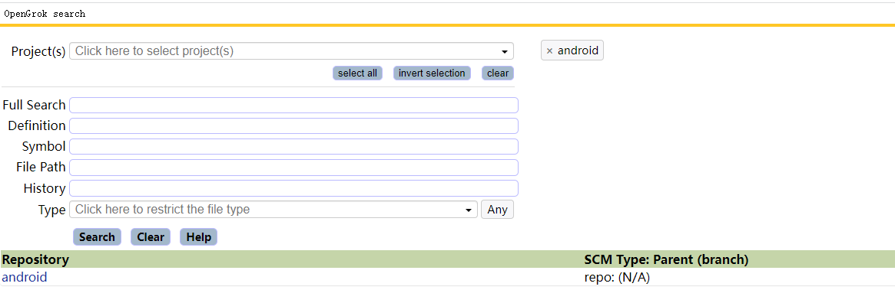

code search server
如何搭建代码搜索服务器
说明
参考链接
安装tomcat9
sudo apt install -y tomcat9
安装universal ctags
sudo apt install -y autoconf automake git clone https://github.com/universal-ctags/ctags.git cd ctags ./autogen.sh ./configure make sudo make install
安装OpenGrok(这里版本版本我没有用最新的，只是用1.4.7，用最新的访问不成功，没有深入研究)
cd ~/tmp wget https://github.com/oracle/opengrok/releases/download/1.4.7/opengrok-1.4.7.tar.gz mkdir ~/opengrok mkdir ~/opengrok/{src,data,dist,etc,log} tar -C ~/opengrok/dist --strip-components=1 -xzf ~/tmp/opengrok-1.4.7.tar.gz cp ~/opengrok/dist/doc/logging.properties ~/opengrok/etc cd ~/opengrok/dist/tools sudo apt install -y python3-pip sudo pip3 install opengrok-tools.tar.gz
配置OpenGrok运行环境
如果需要配置多个大型项目，建议使用多个project，这样便有后面代码的扫描
将源代码对应的目录必须保存到~/opengrok/project/src
如果是本地搭建，不建议保留源码下的.git 文件会增加很多扫描时间
sudo cp ~/opengrok/dist/lib/source.war /var/lib/tomcat9/webapps/project.war sudo vi /var/lib/tomcat9/webapps/project/WEB-INF/web.xml //这里修改为opengrok所在的绝对路径 <param-value>/home/muxi/opengrok/etc/configuration.xml</param-value>
执行如下命令也可以保存为脚本
根据自己的项目名称修改如下的路径与project的名称
sudo java -Djava.util.logging.config.file=/home/muxi/opengrok/etc/logging.properties -jar /home/muxi/opengrok/dist/lib/opengrok.jar -c /usr/local/bin/ctags -s /home/muxi/opengrok/project/src/ -d /home/muxi/opengrok/project/data -H -P -S -G -W /home/muxi/opengrok/project/etc/configuration.xml -U http://localhost:8080/project
扫描结束后就可以访问http://localhost:8080/project，进行代码搜索 